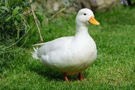

Postagens Recentes
Blogpost
Encontro com animais selvagens
Há muito tempo, numa vasta floresta onde os raios de sol filtravam entre as copas das árvores, viviam os potos, pequenos seres mágicos com orelhas pontudas e olhos brilhantes. Eles eram os guardiões dos segredos da floresta, responsáveis por proteger a harmonia entre todas as criaturas que ali habitavam.
Um dia, um estranho mal começou a se espalhar pela floresta. As árvores começaram a murchar, os riachos ficaram turvos e os animais adoeceram. Os potos, percebendo a agonia da sua casa, decidiram investigar. Viajaram pela floresta, conversando com cada ser vivo, até descobrirem que uma antiga árvore, que servia como fonte de energia da floresta, estava sendo corrompida por uma força sombria.
Um dia, um estranho mal começou a se espalhar pela floresta. As árvores começaram a murchar, os riachos ficaram turvos e os animais adoeceram. Os potos, percebendo a agonia da sua casa, decidiram investigar. Viajaram pela floresta, conversando com cada ser vivo, até descobrirem que uma antiga árvore, que servia como fonte de energia da floresta, estava sendo corrompida por uma força sombria
Com coragem e sabedoria, os potos lideraram o grupo em uma batalha contra as sombras que envolviam a árvore. Usando suas habilidades mágicas, eles lançaram feitiços poderosos e desfizeram a corrupção que havia se instalado na floresta.
Quando a luz retornou à floresta e a árvore antiga voltou a brilhar com energia pura, os potos foram aclamados como heróis. Agradecidos, os outros seres mágicos os nomearam os guardiões supremos da floresta, confiando-lhes a responsabilidade de proteger seu lar para sempre.
E assim, os potos continuaram a sua missão, velando pela harmonia e equilíbrio da floresta, lembrando a todos que, quando se unem em prol de um bem maior, até os menores seres podem realizar grandes feitos.
Aventura na floresta tropical
Em uma remota floresta tropical, onde as árvores se erguiam majestosas até o céu e os animais viviam em harmonia, três amigos embarcaram em uma emocionante aventura.
Lucas, um corajoso explorador, sempre sonhou em desvendar os mistérios da selva. Ao seu lado estava Sofia, uma cientista intrépida apaixonada pela natureza, e Pedro, um habilidoso guia local que conhecia cada canto da floresta.
Guiados por um antigo mapa deixado pelo avô de Pedro, o trio partiu em busca de uma lenda perdida há séculos: o Tesouro da Serpente Dourada. Dizia a lenda que em algum lugar profundo na selva, escondido entre as densas folhagens e as cachoeiras rugindo, havia uma serpente dourada gigante que guardava um tesouro de valor inestimável.
A jornada não seria fácil. Enfrentaram rios turbulentos, trilhas escorregadias e criaturas selvagens. Porém, cada desafio os aproximava mais do seu objetivo. Com coragem e determinação, superaram obstáculos e fortaleceram sua amizade ao longo do caminho.
Finalmente, após dias de busca incansável, chegaram a uma antiga ruína escondida no coração da selva. Lá, depararam-se com uma estátua imponente da Serpente Dourada, sua escama reluzindo à luz do sol filtrada pela vegetação.
Desvendando enigmas e armadilhas, o trio chegou à câmara secreta onde o tesouro repousava. Mas ao invés de joias e ouro, encontraram algo ainda mais valioso: um antigo artefato que continha o segredo para preservar a floresta e proteger suas preciosas criaturas.
Com os corações cheios de gratidão e admiração pela imensa beleza da floresta tropical, Lucas, Sofia e Pedro decidiram honrar o legado da Serpente Dourada. Prometeram trabalhar juntos para conservar e proteger aquele paraíso natural, garantindo que sua magia e mistério continuassem a inspirar as gerações futuras. E assim, com sorrisos de satisfação, partiram de volta para casa, sabendo que sua aventura tinha apenas começado.
.jpeg)
Explorando a selva amazônica
Em uma expedição emocionante pela vastidão da selva amazônica, um grupo de aventureiros partiu em busca de descobertas e desafios. Entre eles estavam Laura, uma bióloga apaixonada pela biodiversidade da Amazônia, Miguel, um experiente guia local com conhecimento profundo da selva, e Carlos, um fotógrafo determinado a capturar a beleza única da floresta tropical.
Guiados pela curiosidade e pelo desejo de desvendar os segredos da Amazônia, o grupo embarcou em uma jornada repleta de maravilhas e perigos. Navegando pelos rios sinuosos e trilhando caminhos estreitos entre árvores imponentes, enfrentaram desafios que testavam sua coragem e determinação a cada passo.
Ao longo do caminho, foram recebidos pela incrível diversidade de vida da selva: pássaros exóticos, macacos ágeis, e uma infinidade de plantas e insetos que transformavam a floresta em um verdadeiro paraíso natural.
Mas a selva também guardava seus mistérios e perigos. Encontros com animais selvagens, como cobras e jacarés, lembravam o grupo da importância de respeitar o ambiente e permanecer vigilante em todos os momentos.
No coração da selva, descobriram uma antiga civilização escondida nas profundezas da floresta. Ruínas misteriosas testemunhavam o passado glorioso de um povo que viveu em harmonia com a natureza por séculos, deixando para trás vestígios de sua sabedoria e cultura.
À medida que a expedição avançava, Laura, Miguel e Carlos se viram mergulhados em uma jornada de autoconhecimento e conexão com a natureza. Cada passo na selva os aproximava mais do seu objetivo, mas também os ensinava lições valiosas sobre humildade, respeito e gratidão pela incrível biodiversidade da Amazônia.
Ao final da expedição, com corações cheios de aventura e aprendizado, o grupo retornou à civilização, levando consigo memórias inesquecíveis e um profundo respeito pela majestade da selva amazônica. Eles sabiam que suas experiências na floresta tropical os acompanhariam para sempre, inspirando-os a proteger e preservar esse tesouro natural para as futuras gerações.
.jpeg)